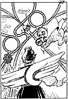
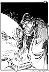
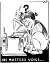
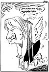
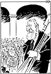
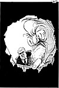
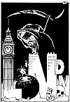
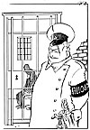
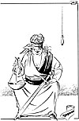
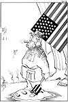

[Desember 1995] [Januar 1996]
Februar 1996
1. februar 1996

- Byvettsregel nr. 10: Grav deg ned i tide, så slipper vi å snu!2. februar 1996

- Var det røykinga med deg også?
- Nei, jeg var bareier.3. februar 1996

Høring5. februar 1996

Lottotemmelignærer er ikke som vanlige millionærer.6. februar 1996

- Som straff skal dere grave et stort hull ved Nationaltheatret.13. februar 1996
- Kva seier du? Skal eg ringe Gadafi og Castro og helse frå Nelson, så fær eg hjelp . . ?
14. februar 1996
- Atlé
15. februar 1996
- Forøvrig er det min mening at Førde bør ødelegges!
16. februar 1996

- Når hølet i lommeboka blir større enn ozon-hølet, oppstår den såkalte viruseffekten.17. februar 1996
- Nelson tilbyr oss et opphold på Robben Island for å lære å skille mellom svart og hvitt!
20. februar 1996

21. februar 1996
- Hva er vel 40 000 tonn i Wales mot 3800 gram i København . . .
22. februar 1996

Russisk miljøvern.23. februar 1996

24. februar 1996
- Hvis alle kinesera slapp lufta ut av sykkeldekka sine, ville're vært nok luft til å tette igjen hele ozzonhølet!!
27. februar 1996

28. februar 1996
- Legg byrådets såpeopera til Folketeateret så kan Den Norske Opera overta disse lokalene!
29. februar 1996
- Forskjellen på oss er at dere maler fanden på veggen, mens vi maler som bare fanden!
[Desember 1995] [Januar 1996]
[Innhold] [Info] [Aftenposten hjemmeside] [Bakgrunn/Kommentar hovedside]


{kind=link}
{kind=link}
{kind=link}
{kind=link}
{kind=link}
{kind=link}
{kind=link}
{kind=link}
{kind=link}
{kind=link}